COPYRIGHT Tim Lovett © July 2004
..
Let us begin with a Bible reading - half a verse. The Bible does not give away much detail about the interior of the Ark. In Genesis 6:14, God told Noah to build 'nests', usually translated as rooms.
|
Gen 6:14a Make thee an ark of gopher wood; rooms shalt thou make in the ark... (KJV) Gen 6:14a. So make yourself an ark of cypress wood ; make rooms in it... (NIV) Gen 6:14a. Make yourself an ark of gopher wood; make rooms in the ark... (NKJV) Gen 6:14a. Make for thee an ark of timbers of cypress, [in] cells thou shalt make the ark (Interlinear Literal. G Berry 1897) |
http://www.netwaysglobal.com/Interlinear/1897-Interlinear-GenI-X.djvu
...; rooms shalt thou make in the ark...
Once
again the average Bible gives the Noah account an unusual (even unique) translation for a common word. This time it's qen:
12 out of 13 times it means 'nest', but this time is gets the unique translation
'room'. No help from the root word either, 

 qanan {kaw-nan'},
qanan {kaw-nan'},
So forgetting rooms, what happens if you think nest?
A snug place. Bedding down, comfortable, warm and dry. Sleeping. Safe. Usually darkened. A place to rear young.
Anyone who breeds birds, rabbits or other animals knows the need for a place to hide away. A nest. So the Bible is giving a strong hint towards the design of animal housing - comfortable and as private as possible in order to comply with the nesting theme.
Ever seen a snake go in a sack? Once it's dark and warm they usually relax. A native animal rescue organization in Australia promotes opaque cages such as wood rather than glass for the keeping of reptiles. A glass window stresses the animal because they can see too much (apart from banging their head of course).
So if you were on board the ark you probably wouldn't see many animals! Mostly they will be hidden in their 'nests', stables and cages. Certainly they don't like being on display. Once it is darkened, warm and confined they go into docile mode, especially when the boat is a-rocking.
With this in mind we are ready to look at the interior layout. We are not aiming for an open plan layout or cavernous interior. The overriding concern is for the hull structure, but the design decision is actually a mixture of structural requirements and useful room size. To a certain extent, the structural requirements of wave loads and water pressure would tend to bring the frames closer together, but for layout flexibility the interior compartments might want to be large. So there is a balance between the two, bulkhead frame spacing vs room size.
Spacing of Bulkhead Frames
|
Closer together... |
Further Apart... |
|
|
1. Roof Buckling
We look first at the roof because it is thinner than the keel. If the frames are too far apart and a sagging hull puts the roof in compression, the roof could buckle.
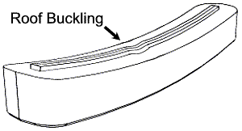
Using this set of "out of the air" values:
Roof layers. 1=350, 2=150, 3=150, 4=75mm, timber = Douglas Fir, Loading = unrestricted service ABS wave bending moment, vertical acceleration of 0.6 and the equivalent water load of 1m of water on the roof, the roof does not tend to buckle until the span reaches 17m. The very deep roof section works like a double skinned hull in secondary bending, despite the meager 4% contribution of the 45 degree layers. So roof buckling is not a problem.
Roof compression stress was graphed against bulkhead spacing. Using the conservative strength values of NDS design guides, a 9 MPa compressive stress limit occurs at 7m bulkhead span. Looks like 7m should be OK.
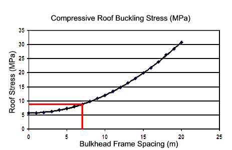
2. Sidewall Secondary Bending (water pressure)
XY Bending
Obviously the walls will not be such a pretty picture. The sidewall has lower member stiffness than the roof since it is rather thin. Add the higher waterpressure and the walls will be wanting to cave in. Sidewall secondary bending in XY plane
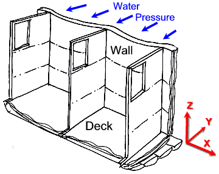
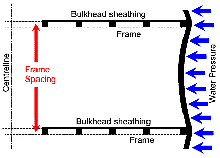
Plan View of a bottom deck room showing the unsupported sidewall under water pressure (exaggerated). The deeper the water the higher the pressure, so the lowest deck needs the most reinforcement. Dynamic effects and wave slamming loads would also add significant stresses to the hull.
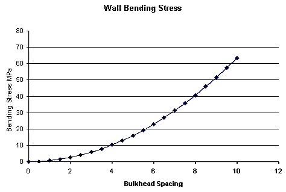
Preliminary static water pressures at 12m draft (sitting in a wave) show the sidewall is really only capable of spanning 3 or 4 meters between frames. This has not taken dynamic loading into account either, so it looks like the sidewall has no choice but to have intermediate frames.
YZ Bending
The picture is not quite so bad however. The intermediate decks also support the walls. This creates bending in the vertical plane (YZ) also.
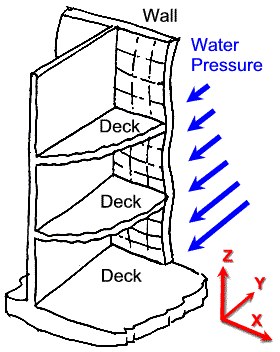
In the vertical plane (YZ bending) the sidewall is not very efficient because the extreme inboard and outboard layers are horizontal. So they don't help much at all. Now we are left with the inside diagonal layers, but since they are at 45 degrees they are effectively spanning not 5 meters but 7. Furthermore they are closer to the wall element's neutral axis so their bending stiffness is reduced. As a result there will be some contribution of the diagonal layers 2 and 3 towards prevention of wall bending, certainly more than the meager 4% assumed in the XY bending strip calculation.
This will increase the span a little, perhaps by 20% or so. However, once dynamic loads are included the wall might span no more than perhaps 3 meters, far too narrow for a useable animal space. There is no choice but to add intermediate wall supports between frames.
The hull wall is stiffest in XY bending, so this is one to employ against water pressure. We need to add vertical supports to help the wall bridge the span in the XY plane.
Solutions
The rib solution. Standard practice in the days of the sailing ship was a skeleton of frames behind the planking. These ribs were used for strength and for attaching the planks of course, but in our case they might be there just to help resist bending. There is only one problem - the increase of the wall element's area moment will depend on how far away these ribs are from the neutral axis. In this case, not very far. So the "ribs" will be too weak. If we add more ribs we will just end up with a fifth hull layer, which didn't take advantage of the XY bending in the first place. Instead, we just changed it into YZ bending.
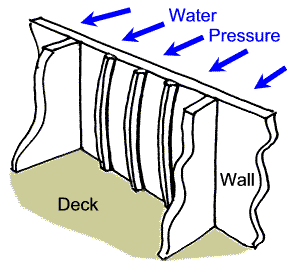
For a stiffer wall support we could copy the design of the bulkheads.
Since the parallel planking is on the hull wall extremities (inboard & outboard) then the wall is stiffest in this direction, best in XY bending. This why 3 ply has outer layers less than half the core thickness - bending effect is prop to distance from centre ^2. So since we are designing for XY bending, we need something like mini-bulkheads (subwalls in the picture);
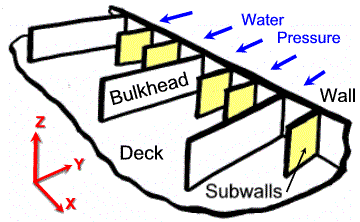
But since the wall loads are mostly compressive, the sheathing could be economically replaced with a buttress arrangement, since the tensile force problem of large timbers is negated. The buttress is designed to transmit wall loads to both upper and lower decks.
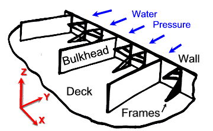
3. Span of Decks 2 & 3
Without even doing the numbers, 7m sounds like a long way to span timber, particularly considering the significant floor loads and accelerations of the vessel. Chances are we are going to need some support if we don't want to make the decks absurdly thick. This eats into your loading space too, don't forget.
Since we already have some structure (wall frames) penetrating the room, it is possible that we could extend them into supports for decks 2 and 3. Starting to look a little clinical now - less like a steel ship, and more like a timber ship.
Whether this detail would need to be carried right though to the roof remains to be seen, but the initial roof buckling calculations the top deck show a clear span between bulkheads might be possible. Even the bulkheads themselves could have less sheathing area, producing a more open plan upper level.
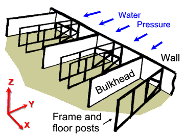
4. Keel Buckling in Hog
The keel buckling issue is accentuated by the water pressure on the underside.
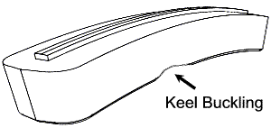
The orientation of keel logs and the lengthwise structural planking are ready-made to resist the pressure longitudinally - bridging between bulkhead frames as it bends in the XZ plane. The massive bottom is more than just a convenient lump of wood to nail into. See Transverse Section
Axial loads are similar to the roof (lower actually, since the neutral axis is closer to the massive keel), so the primary compression caused by hog should be easy to handle. The water pressure bending will add to this however, so we have to watch out for keel buckling in hog.
The calculation of keel element area moment ignores all non longitudinal members. One half of the keel used in the Ixx calculation is shown below.
(Centroid is 660mm from the level top, Ixx is 4.43e12mm^4)
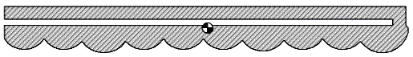
Using a water pressure at the extreme depth of 15m (hogging in a wave reaching the roof), the resulting bending stress is a comfortable 3Mpa (450psi), and a trivial 1.5mm deflection. So there is ample strength in the keel to easily span 7m between bulkheads, provided the bulkheads are strong enough.
5. Flexible Room Layout
A post in the wrong place is very annoying, it would be better to place them in a way that facilitates enclosure layout. So what's a good layout?
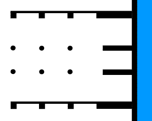
First of all, the posts are round because you save on sawing and they are stronger for their size. A very hard dense timber would be fine here because there is almost no processing involved (not much different to a mine support, though not so stout.
The reasoning behind the non-regular spacing?
With the center rows narrowed, it might be easier to have either single or double aisles. The space between bulkhead and frame is also more useable.
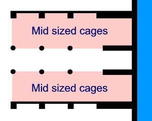
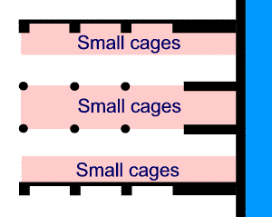
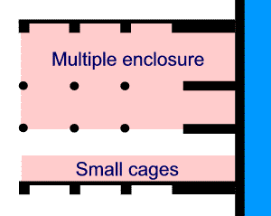
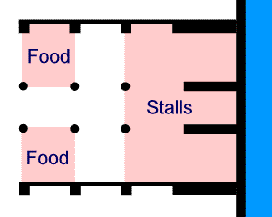
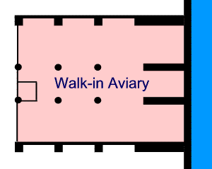
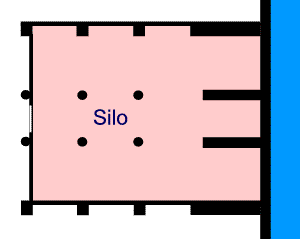
These are only suggestions to give some idea of how the rooms might be utilized. There could be other options depending on the calculations.
For example. It might turn out that the wall needs three buttresses, but the floor decking only one mid-span support.
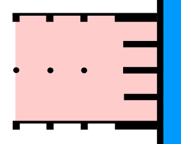
Perhaps with the top deck reverting to a more open plan design;
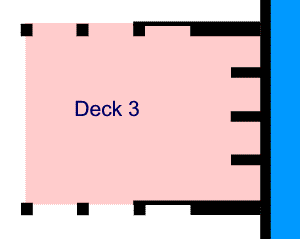
6. Economy of Frames
Structurally speaking the bulkheads have been set at a comfortable maximum. This defines the minimum number of frames without the opposite effect - beefing up everything else in order to save a few frames (false economy).
To prepare for the worst, it was envisaged the ark might need require longitudinal trusses inside. This could be a way to address the weak spot in the monocoque caused by the skylight opening. However, the slitted tube issue is no longer a high priority because the lattice skylight might resolve the problem.
But just in case, here are some length-wise truss ideas.
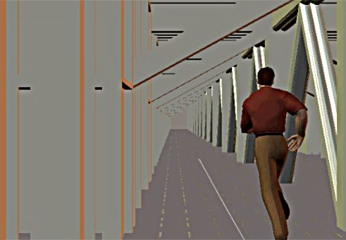
Concept for a longitudinal trusses Image Tim Lovett 2002
One of our first ever ark images shows a lengthwise truss in the center of a rather wide ark corridor, not the best place considering the skylight zone is now supposed to be non-structural. The framing members are single deck only but a full height truss chord is not inconceivable, and would certainly help with the headache of big timbers - joining.
|
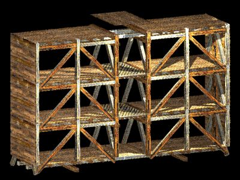 |
Double Truss This 2002 image shows a central light well formed by a walkway with a slotted floor. Longitudinally, the 2 planar trusses enclose the corridors. There are a few obsolete details; The current design of decks 2 & 3 uses transverse beams and longitudinal decking. The big timber joining headache of the lateral diagonals have since been swapped for bulkhead sheathing - performing the same task and partitioning the rooms at the same time. And the longitudinal truss system behind the hull wall is out. We are using cross planking now. Image Tim Lovett 2002 |
1. The Genesis Record. Morris H M Creation-Life Publishers, San Diego. 1976.